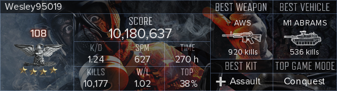

遊玩的遊戲

osu玩了很久 右邊是舊的帳號紀錄 因為之前改版登入需要信箱認證 就無法再登入了 只好開新帳號 只會打osu模式 其他都超爛的


BF4是我最喜歡的遊戲 戰地系列從3代 4代 hardline 1代都買了 然而我覺得BF4最好玩
BF1買了一陣子都不怎麼打 整張地圖都龜狗 打起來有夠無聊

OW從openbeta一路打到現在 也算是玩最久的遊戲 自己的RK以打到心累 拿朋友帳號亂打 分數跟自己的一樣高 平常都跟只跟認識的打

steam我意外的沒有玩很多
ARK買蠻久了 剛好趁漲價前的特價買了下來 以前都是跟朋友打 很就沒打了
CSGO最近朋友也買了 所以開始回歸 就只是跟小菜雞
DOOM 神作 好玩
L4D2玩了300小時 最值得的遊戲 在2012聖誕節剛好領到免費的
缺氧 無聊時玩玩
payday2 送100W份時拿到 朋友找才會玩
PUBG 看別人打很好玩 買下去才發現 根本不是我喜歡的類型 現在都跟朋友一起當歡樂送頭仔
個人的小空間 << Previous